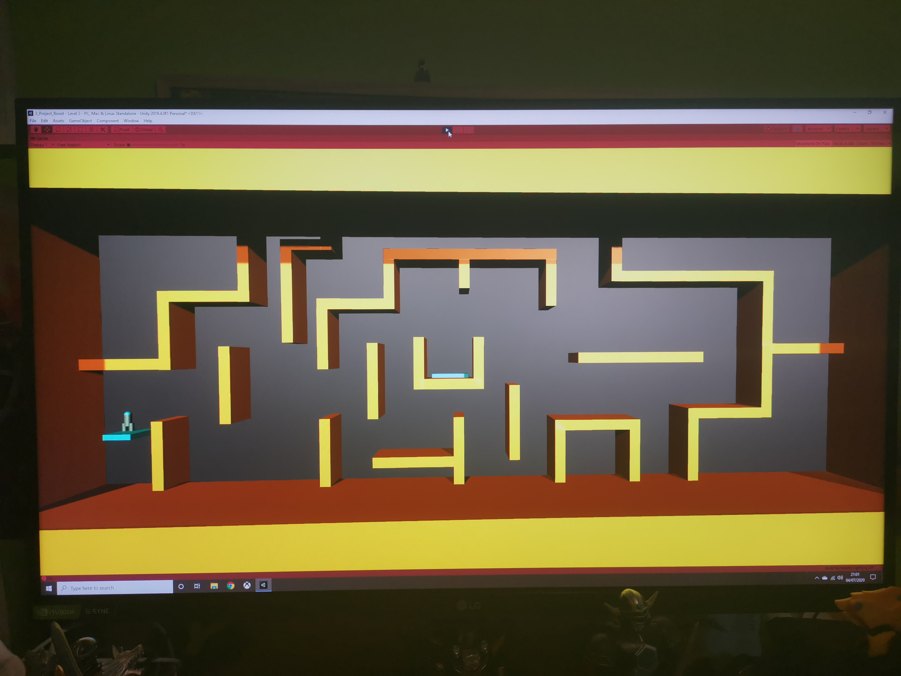
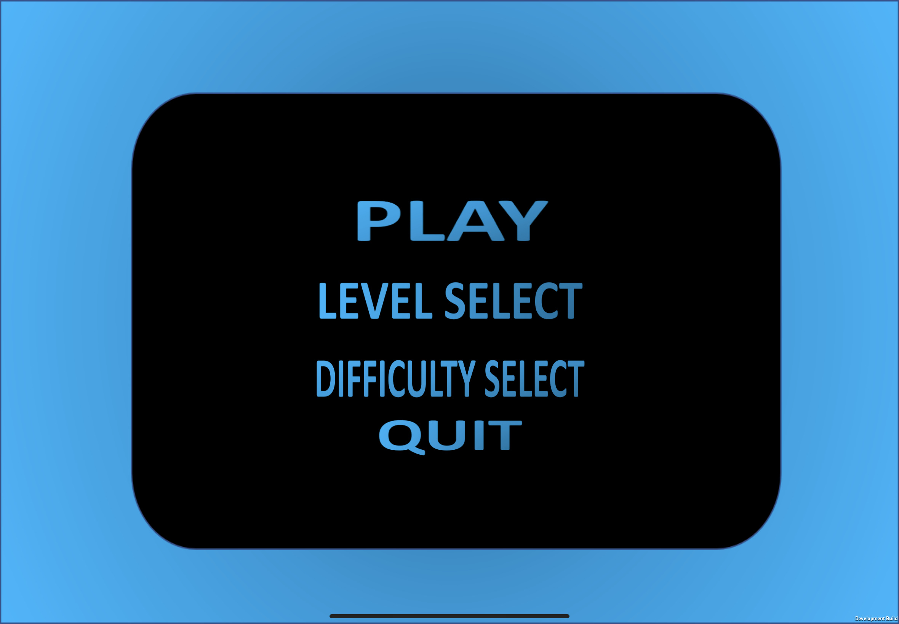
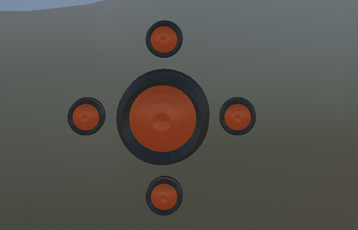

Sploder, a user's guide

Sploder, a user's guide
During my first year at University I created a website using WordPress.
The website was centred around how to use a website called Sploder.
Sploder is a website which allows users to create their own games within the website itself.
I was in charge of creating the website and amending the various sections of the site when needed.
Each member of the group were given their own section within the site to work on.
I was in charge of writing the “Sploder’s use in education” section.
Throughout the project I was given the role of ensuring all sections of the site were free from
spelling mistakes and that the content of the page was correct. The site is still functioning to this day and
can be viewed here.
Welsh games for children

Welsh game for children
For my final year project during university, I was given the task to create a website for a client. Although I didn’t have a specific client, I had a family member who works at a school and they noticed that the children were starting to use their iPad/tablets more for reading and learning. As welsh is one of my first languages, I decided to create a website which could help young children learn welsh. I wanted my website to include bright colours and pictures to draw the user’s attention and to make the experience playful and fun for the user.
How to play a level
All three of the games playable on the site currently function the same.
The user is given a question in Welsh and they have to pic the correct corresponding image/word to gain points.
[picture of a game mid-level]
Home screen
The home screen works also works as a help page.
It includes a screenshot of each of the three games playable on the site along with a short paragraph describing how the games work.
Using an on-screen button, it is possible to change the language used from English to Welsh or vice versa.

Problems faced and solutions given
My original plan was to give the user the ability to save and view their score that they got for the games.
I would have done this by building a form using HTML and Javascript and saving the score using Ajax and SQL and reading the score back using Ajax and SQL.
However, due to the time constraints of the project I was unable to get a working score system.
Since completing the project at university I have decided to revisit it from a different approach. As I have mentioned previously, since graduating I started working on my own games using unity. While working with a scoring system for a different game, I realised it would also work with this game.
Turning the website into a game using unity.
As I had all the assets needed to create the game already, it was very simple to create a small test of how the game would work coded in unity.
As of writing this, I have created three levels from the animal game featured on the site. It was very simple to implement it into unity and I will continue working on the game until it is complete.
(click on the image below to watch the game in action)
Asteroid Void / Project S.P.D
Intro
As I want to pursue a career in game development, after graduating in the first half of 2020, I started creating my own game/games. The first game I created was Asteroid Void. My original plan for the game looks very different from the current version of the game.
First Version
The first version of the game included a black backdrop with rectangles of various colours acting as objects the player had to avoid. The rectangles could also move to make it harder for the player. The more and more I worked on the game the more I disliked it. I was unsure what needed changing so I asked some friends for some feedback on what to improve. One of them said the game looked lifeless and I agreed. The games lighting looked didn’t look correct against the black background. Using rectangles as obstacles also seemed incorrect considering the game is about controlling a space rocket. The game also ad large yellow rectangles surrounding the game’s border. This made the game feel very small.
Current version
The version I’m currently developing looks very different compared to the previous version. The background is now no longer a solid colour, but rather a collection of 3D models placed together to make the game seem like it’s in outer space. I also removed the rectangles which were surrounding the border to make the game look bigger. Instead of rectangles acting like obstacles for the player to avoid, I modelled some asteroids in blender to fit with the game’s “space” look. Unlike the previous version, I have also added enemies to the game. These can be seen further down the page. (click on the image below to watch the game in action)

Main Menu
From here the player is able to play the game from the first level by clicking on the (Play) option. When the player clicks on the (level select) option they are able to select 4 different difficulty settings each with their own unique set of levels. In the current build of the game, I have only created levels for the first two difficulties. When the player accesses a difficulty setting, they are able to see a score for each of the levels they have completed in the form of stars. The stars also update if they improve their score.
Playing a level
The aim of the game is to move the rocket from one side of the screen to the other while avoiding objects and collecting stars. Once the user completes a level within the game, they are given the option to continue playing, or to go back to the game’s main menu. If the player plays the game on a PC they can use the arrow keys or w,a,s,d, keys to move the rocket. On a mobile device UI buttons appear on screen to allow players to play the game on a mobile device.
Enemies
Throughout the game, there are various enemies the player can come across.
HIVE
The hive is a circular shaped enemy which rotates and shoots out smaller versions of itself to attack the player. When the player comes in contact with this enemy, they lose 1 heart of health.
TADPOD
Very small rocket which is shaped like a tadpole. It fires small streams of bullets towards the player which removes 1 heart of health.

Items/power-ups
All assets visible in the game were created by me using blender. The game is written in Unity C#. The game uses touch controls but also a keyboard and mouse which allows the game to be played on a mobile device or a computer.

3D Advent Calendar


LImBuS Biobank Information Management System

Air Fryer Calculator
Contact Me
dgethinlewis@gmail.com